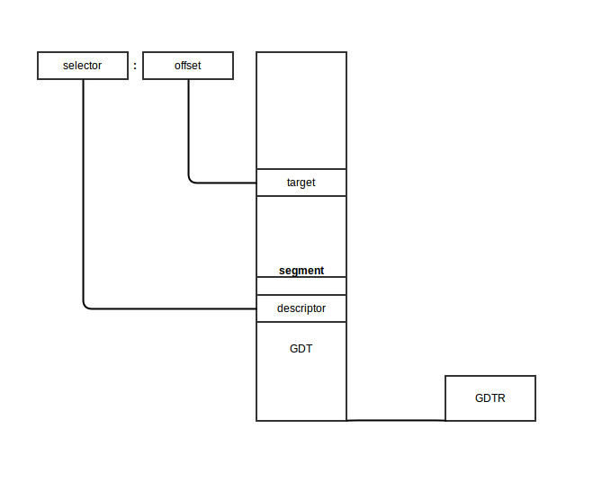

Kernel booting process. Part 2.
First steps in the kernel setup
We started to dive into the Linux kernel's insides in the previous part and saw the initial part of the kernel setup code. We stopped at the first call to the main function (which is the first function written in C) from arch/x86/boot/main.c.
In this part, we will continue to research the kernel setup code and go over
- what
protected modeis, - the transition into it,
- the initialization of the heap and the console,
- memory detection, CPU validation and keyboard initialization
- and much much more.
So, let's go ahead.
Protected mode
Before we can move to the native Intel64 Long Mode, the kernel must switch the CPU into protected mode.
What is protected mode? Protected mode was first added to the x86 architecture in 1982 and was the main mode of Intel processors from the 80286 processor until Intel 64 and long mode came.
The main reason to move away from Real mode is that there is very limited access to the RAM. As you may remember from the previous part, there are only 220 bytes or 1 Megabyte, sometimes even only 640 Kilobytes of RAM available in Real mode.
Protected mode brought many changes, but the main one is the difference in memory management. The 20-bit address bus was replaced with a 32-bit address bus. It allowed access to 4 Gigabytes of memory vs the 1 Megabyte in Real mode. Also, paging support was added, which you can read about in the next sections.
Memory management in Protected mode is divided into two, almost independent parts:
- Segmentation
- Paging
Here we will only talk about segmentation. Paging will be discussed in the next sections.
As you can read in the previous part, addresses consist of two parts in Real mode:
- Base address of the segment
- Offset from the segment base
And we can get the physical address if we know these two parts by:
PhysicalAddress = Segment Base * 16 + Offset
Memory segmentation was completely redone in protected mode. There are no 64 Kilobyte fixed-size segments. Instead, the size and location of each segment is described by an associated data structure called the Segment Descriptor. These segment descriptors are stored in a data structure called the Global Descriptor Table (GDT).
The GDT is a structure which resides in memory. It has no fixed place in the memory, so its address is stored in the special GDTR register. Later we will see how the GDT is loaded in the Linux kernel code. There will be an operation for loading it from memory, something like:
lgdt gdt
where the lgdt instruction loads the base address and limit(size) of the global descriptor table to the GDTR register. GDTR is a 48-bit register and consists of two parts:
- the size(16-bit) of the global descriptor table;
- the address(32-bit) of the global descriptor table.
As mentioned above, the GDT contains segment descriptors which describe memory segments. Each descriptor is 64-bits in size. The general scheme of a descriptor is:
63 56 51 48 45 39 32
------------------------------------------------------------
| | |B| |A| | | | |0|E|W|A| |
| BASE 31:24 |G|/|L|V| LIMIT |P|DPL|S| TYPE | BASE 23:16 |
| | |D| |L| 19:16 | | | |1|C|R|A| |
------------------------------------------------------------
31 16 15 0
------------------------------------------------------------
| | |
| BASE 15:0 | LIMIT 15:0 |
| | |
------------------------------------------------------------
Don't worry, I know it looks a little scary after Real mode, but it's easy. For example LIMIT 15:0 means that bits 0-15 of the segment limit are located at the beginning of the Descriptor. The rest of it is in LIMIT 19:16, which is located at bits 48-51 of the Descriptor. So, the size of Limit is 0-19 i.e 20-bits. Let's take a closer look at it:
- Limit[20-bits] is split between bits 0-15 and 48-51. It defines the
length_of_segment - 1. It depends on theG(Granularity) bit.
- if
G(bit 55) is 0 and the segment limit is 0, the size of the segment is 1 Byte - if
Gis 1 and the segment limit is 0, the size of the segment is 4096 Bytes - if
Gis 0 and the segment limit is 0xfffff, the size of the segment is 1 Megabyte - if
Gis 1 and the segment limit is 0xfffff, the size of the segment is 4 Gigabytes
So, what this means is
- if G is 0, Limit is interpreted in terms of 1 Byte and the maximum size of the segment can be 1 Megabyte.
- if G is 1, Limit is interpreted in terms of 4096 Bytes = 4 KBytes = 1 Page and the maximum size of the segment can be 4 Gigabytes. Actually, when G is 1, the value of Limit is shifted to the left by 12 bits. So, 20 bits + 12 bits = 32 bits and 232 = 4 Gigabytes.
-
Base[32-bits] is split between bits 16-31, 32-39 and 56-63. It defines the physical address of the segment's starting location.
-
Type/Attribute[5-bits] is represented by bits 40-44. It defines the type of segment and how it can be accessed.
- The
Sflag at bit 44 specifies the descriptor type. IfSis 0 then this segment is a system segment, whereas ifSis 1 then this is a code or data segment (Stack segments are data segments which must be read/write segments).
To determine if the segment is a code or data segment, we can check its Ex(bit 43) Attribute (marked as 0 in the above diagram). If it is 0, then the segment is a Data segment, otherwise, it is a code segment.
A segment can be of one of the following types:
--------------------------------------------------------------------------------------
| Type Field | Descriptor Type | Description |
|-----------------------------|-----------------|------------------------------------|
| Decimal | | |
| 0 E W A | | |
| 0 0 0 0 0 | Data | Read-Only |
| 1 0 0 0 1 | Data | Read-Only, accessed |
| 2 0 0 1 0 | Data | Read/Write |
| 3 0 0 1 1 | Data | Read/Write, accessed |
| 4 0 1 0 0 | Data | Read-Only, expand-down |
| 5 0 1 0 1 | Data | Read-Only, expand-down, accessed |
| 6 0 1 1 0 | Data | Read/Write, expand-down |
| 7 0 1 1 1 | Data | Read/Write, expand-down, accessed |
| C R A | | |
| 8 1 0 0 0 | Code | Execute-Only |
| 9 1 0 0 1 | Code | Execute-Only, accessed |
| 10 1 0 1 0 | Code | Execute/Read |
| 11 1 0 1 1 | Code | Execute/Read, accessed |
| 12 1 1 0 0 | Code | Execute-Only, conforming |
| 14 1 1 0 1 | Code | Execute-Only, conforming, accessed |
| 13 1 1 1 0 | Code | Execute/Read, conforming |
| 15 1 1 1 1 | Code | Execute/Read, conforming, accessed |
--------------------------------------------------------------------------------------
As we can see the first bit(bit 43) is 0 for a data segment and 1 for a code segment. The next three bits (40, 41, 42) are either EWA(Expansion Writable Accessible) or CRA(Conforming Readable Accessible).
- if E(bit 42) is 0, expand up, otherwise, expand down. Read more here.
- if W(bit 41)(for Data Segments) is 1, write access is allowed, and if it is 0, the segment is read-only. Note that read access is always allowed on data segments.
- A(bit 40) controls whether the segment can be accessed by the processor or not.
- C(bit 43) is the conforming bit(for code selectors). If C is 1, the segment code can be executed from a lower level privilege (e.g. user) level. If C is 0, it can only be executed from the same privilege level.
- R(bit 41) controls read access to code segments; when it is 1, the segment can be read from. Write access is never granted for code segments.
-
DPL[2-bits] (Descriptor Privilege Level) comprises the bits 45-46. It defines the privilege level of the segment. It can be 0-3 where 0 is the most privileged level.
-
The P flag(bit 47) indicates if the segment is present in memory or not. If P is 0, the segment will be presented as invalid and the processor will refuse to read from this segment.
-
AVL flag(bit 52) - Available and reserved bits. It is ignored in Linux.
-
The L flag(bit 53) indicates whether a code segment contains native 64-bit code. If it is set, then the code segment executes in 64-bit mode.
-
The D/B flag(bit 54) (Default/Big flag) represents the operand size i.e 16/32 bits. If set, operand size is 32 bits. Otherwise, it is 16 bits.
Segment registers contain segment selectors as in real mode. However, in protected mode, a segment selector is handled differently. Each Segment Descriptor has an associated Segment Selector which is a 16-bit structure:
15 3 2 1 0
-----------------------------
| Index | TI | RPL |
-----------------------------
Where,
- Index stores the index number of the descriptor in the GDT.
- TI(Table Indicator) indicates where to search for the descriptor. If it is 0 then the descriptor is searched for in the Global Descriptor Table(GDT). Otherwise, it will be searched for in the Local Descriptor Table(LDT).
- And RPL contains the Requester's Privilege Level.
Every segment register has a visible and a hidden part.
- Visible - The Segment Selector is stored here.
- Hidden - The Segment Descriptor (which contains the base, limit, attributes & flags) is stored here.
The following steps are needed to get a physical address in protected mode:
- The segment selector must be loaded in one of the segment registers.
- The CPU tries to find a segment descriptor at the offset
GDT address + Indexfrom the selector and then loads the descriptor into the hidden part of the segment register. - If paging is disabled, the linear address of the segment, or its physical address, is given by the formula: Base address (found in the descriptor obtained in the previous step) + Offset.
Schematically it will look like this:

The algorithm for the transition from real mode into protected mode is:
- Disable interrupts
- Describe and load the GDT with the
lgdtinstruction - Set the PE (Protection Enable) bit in CR0 (Control Register 0)
- Jump to protected mode code
We will see the complete transition to protected mode in the Linux kernel in the next part, but before we can move to protected mode, we need to do some more preparations.
Let's look at arch/x86/boot/main.c. We can see some routines there which perform keyboard initialization, heap initialization, etc... Let's take a look.
Copying boot parameters into the "zeropage"
We will start from the main routine in "main.c". The first function which is called in main is copy_boot_params(void). It copies the kernel setup header into the corresponding field of the boot_params structure which is defined in the arch/x86/include/uapi/asm/bootparam.h header file.
The boot_params structure contains the struct setup_header hdr field. This structure contains the same fields as defined in the linux boot protocol and is filled by the boot loader and also at kernel compile/build time. copy_boot_params does two things:
-
It copies
hdrfrom header.S to thesetup_headerfield inboot_paramsstructure. -
It updates the pointer to the kernel command line if the kernel was loaded with the old command line protocol.
Note that it copies hdr with the memcpy function, defined in the copy.S source file. Let's have a look inside:
GLOBAL(memcpy)
pushw %si
pushw %di
movw %ax, %di
movw %dx, %si
pushw %cx
shrw $2, %cx
rep; movsl
popw %cx
andw $3, %cx
rep; movsb
popw %di
popw %si
retl
ENDPROC(memcpy)
Yeah, we just moved to C code and now assembly again :) First of all, we can see that memcpy and other routines which are defined here, start and end with the two macros: GLOBAL and ENDPROC. GLOBAL is described in arch/x86/include/asm/linkage.h which defines the globl directive and its label. ENDPROC is described in include/linux/linkage.h and marks the name symbol as a function name and ends with the size of the name symbol.
The implementation of memcpy is simple. At first, it pushes values from the si and di registers to the stack to preserve their values because they will change during the memcpy. As we can see in the REALMODE_CFLAGS in arch/x86/Makefile, the kernel build system uses the -mregparm=3 option of GCC, so functions get the first three parameters from ax, dx and cx registers. Calling memcpy looks like this:
memcpy(&boot_params.hdr, &hdr, sizeof hdr);
So,
axwill contain the address ofboot_params.hdrdxwill contain the address ofhdrcxwill contain the size ofhdrin bytes.
memcpy puts the address of boot_params.hdr into di and saves cx on the stack. After this it shifts the value right 2 times (or divides it by 4) and copies four bytes from the address at si to the address at di. After this, we restore the size of hdr again, align it by 4 bytes and copy the rest of the bytes from the address at si to the address at di byte by byte (if there is more). Now the values of si and di are restored from the stack and the copying operation is finished.
Console initialization
After hdr is copied into boot_params.hdr, the next step is to initialize the console by calling the console_init function, defined in arch/x86/boot/early_serial_console.c.
It tries to find the earlyprintk option in the command line and if the search was successful, it parses the port address and baud rate of the serial port and initializes the serial port. The value of the earlyprintk command line option can be one of these:
- serial,0x3f8,115200
- serial,ttyS0,115200
- ttyS0,115200
After serial port initialization we can see the first output:
if (cmdline_find_option_bool("debug"))
puts("early console in setup code\n");
The definition of puts is in tty.c. As we can see it prints character by character in a loop by calling the putchar function. Let's look into the putchar implementation:
void __attribute__((section(".inittext"))) putchar(int ch)
{
if (ch == '\n')
putchar('\r');
bios_putchar(ch);
if (early_serial_base != 0)
serial_putchar(ch);
}
__attribute__((section(".inittext"))) means that this code will be in the .inittext section. We can find it in the linker file setup.ld.
First of all, putchar checks for the \n symbol and if it is found, prints \r before. After that it prints the character on the VGA screen by calling the BIOS with the 0x10 interrupt call:
static void __attribute__((section(".inittext"))) bios_putchar(int ch)
{
struct biosregs ireg;
initregs(&ireg);
ireg.bx = 0x0007;
ireg.cx = 0x0001;
ireg.ah = 0x0e;
ireg.al = ch;
intcall(0x10, &ireg, NULL);
}
Here initregs takes the biosregs structure and first fills biosregs with zeros using the memset function and then fills it with register values.
memset(reg, 0, sizeof *reg);
reg->eflags |= X86_EFLAGS_CF;
reg->ds = ds();
reg->es = ds();
reg->fs = fs();
reg->gs = gs();
Let's look at the implementation of memset:
GLOBAL(memset)
pushw %di
movw %ax, %di
movzbl %dl, %eax
imull $0x01010101,%eax
pushw %cx
shrw $2, %cx
rep; stosl
popw %cx
andw $3, %cx
rep; stosb
popw %di
retl
ENDPROC(memset)
As you can read above, it uses the same calling conventions as the memcpy function, which means that the function gets its parameters from the ax, dx and cx registers.
The implementation of memset is similar to that of memcpy. It saves the value of the di register on the stack and puts the value ofax, which stores the address of the biosregs structure, into di . Next is the movzbl instruction, which copies the value of dl to the lowermost byte of the eax register. The remaining 3 high bytes of eax will be filled with zeros.
The next instruction multiplies eax with 0x01010101. It needs to because memset will copy 4 bytes at the same time. For example, if we need to fill a structure whose size is 4 bytes with the value 0x7 with memset, eax will contain the 0x00000007. So if we multiply eax with 0x01010101, we will get 0x07070707 and now we can copy these 4 bytes into the structure. memset uses the rep; stosl instruction to copy eax into es:di.
The rest of the memset function does almost the same thing as memcpy.
After the biosregs structure is filled with memset, bios_putchar calls the 0x10 interrupt which prints a character. Afterwards it checks if the serial port was initialized or not and writes a character there with serial_putchar and inb/outb instructions if it was set.
Heap initialization
After the stack and bss section have been prepared in header.S (see previous part), the kernel needs to initialize the heap with the init_heap function.
First of all init_heap checks the CAN_USE_HEAP flag from the loadflags structure in the kernel setup header and calculates the end of the stack if this flag was set:
char *stack_end;
if (boot_params.hdr.loadflags & CAN_USE_HEAP) {
asm("leal %P1(%%esp),%0"
: "=r" (stack_end) : "i" (-STACK_SIZE));
or in other words stack_end = esp - STACK_SIZE.
Then there is the heap_end calculation:
heap_end = (char *)((size_t)boot_params.hdr.heap_end_ptr + 0x200);
which means heap_end_ptr or _end + 512 (0x200h). The last check is whether heap_end is greater than stack_end. If it is then stack_end is assigned to heap_end to make them equal.
Now the heap is initialized and we can use it using the GET_HEAP method. We will see what it is used for, how to use it and how it is implemented in the next posts.
CPU validation
The next step as we can see is cpu validation through the validate_cpu function from arch/x86/boot/cpu.c source code file.
It calls the check_cpu function and passes cpu level and required cpu level to it and checks that the kernel launches on the right cpu level.
check_cpu(&cpu_level, &req_level, &err_flags);
if (cpu_level < req_level) {
...
return -1;
}
The check_cpu function checks the CPU's flags, the presence of long mode in the case of x86_64(64-bit) CPU, checks the processor's vendor and makes preparations for certain vendors like turning on SSE+SSE2 for AMD if they are missing, etc.
at the next step, we may see a call to the set_bios_mode function after setup code found that a CPU is suitable. As we may see, this function is implemented only for the x86_64 mode:
static void set_bios_mode(void)
{
#ifdef CONFIG_X86_64
struct biosregs ireg;
initregs(&ireg);
ireg.ax = 0xec00;
ireg.bx = 2;
intcall(0x15, &ireg, NULL);
#endif
}
The set_bios_mode function executes the 0x15 BIOS interrupt to tell the BIOS that long mode (if bx == 2) will be used.
Memory detection
The next step is memory detection through the detect_memory function. detect_memory basically provides a map of available RAM to the CPU. It uses different programming interfaces for memory detection like 0xe820, 0xe801 and 0x88. We will see only the implementation of the 0xE820 interface here.
Let's look at the implementation of the detect_memory_e820 function from the arch/x86/boot/memory.c source file. First of all, the detect_memory_e820 function initializes the biosregs structure as we saw above and fills registers with special values for the 0xe820 call:
initregs(&ireg);
ireg.ax = 0xe820;
ireg.cx = sizeof buf;
ireg.edx = SMAP;
ireg.di = (size_t)&buf;
axcontains the number of the function (0xe820 in our case)cxcontains the size of the buffer which will contain data about the memoryedxmust contain theSMAPmagic numberes:dimust contain the address of the buffer which will contain memory dataebxhas to be zero.
Next is a loop where data about the memory will be collected. It starts with a call to the 0x15 BIOS interrupt, which writes one line from the address allocation table. For getting the next line we need to call this interrupt again (which we do in the loop). Before the next call ebx must contain the value returned previously:
intcall(0x15, &ireg, &oreg);
ireg.ebx = oreg.ebx;
Ultimately, this function collects data from the address allocation table and writes this data into the e820_entry array:
- start of memory segment
- size of memory segment
- type of memory segment (whether the particular segment is usable or reserved)
You can see the result of this in the dmesg output, something like:
[ 0.000000] e820: BIOS-provided physical RAM map:
[ 0.000000] BIOS-e820: [mem 0x0000000000000000-0x000000000009fbff] usable
[ 0.000000] BIOS-e820: [mem 0x000000000009fc00-0x000000000009ffff] reserved
[ 0.000000] BIOS-e820: [mem 0x00000000000f0000-0x00000000000fffff] reserved
[ 0.000000] BIOS-e820: [mem 0x0000000000100000-0x000000003ffdffff] usable
[ 0.000000] BIOS-e820: [mem 0x000000003ffe0000-0x000000003fffffff] reserved
[ 0.000000] BIOS-e820: [mem 0x00000000fffc0000-0x00000000ffffffff] reserved
Keyboard initialization
The next step is the initialization of the keyboard with a call to the keyboard_init function. At first keyboard_init initializes registers using the initregs function. It then calls the 0x16 interrupt to query the status of the keyboard.
initregs(&ireg);
ireg.ah = 0x02; /* Get keyboard status */
intcall(0x16, &ireg, &oreg);
boot_params.kbd_status = oreg.al;
After this it calls 0x16 again to set the repeat rate and delay.
ireg.ax = 0x0305; /* Set keyboard repeat rate */
intcall(0x16, &ireg, NULL);
Querying
The next couple of steps are queries for different parameters. We will not dive into details about these queries but we will get back to them in later parts. Let's take a short look at these functions:
The first step is getting Intel SpeedStep information by calling the query_ist function. It checks the CPU level and if it is correct, calls 0x15 to get the info and saves the result to boot_params.
Next, the query_apm_bios function gets Advanced Power Management information from the BIOS. query_apm_bios calls the 0x15 BIOS interruption too, but with ah = 0x53 to check APM installation. After 0x15 finishes executing, the query_apm_bios functions check the PM signature (it must be 0x504d), the carry flag (it must be 0 if APM supported) and the value of the cx register (if it's 0x02, the protected mode interface is supported).
Next, it calls 0x15 again, but with ax = 0x5304 to disconnect the APM interface and connect the 32-bit protected mode interface. In the end, it fills boot_params.apm_bios_info with values obtained from the BIOS.
Note that query_apm_bios will be executed only if the CONFIG_APM or CONFIG_APM_MODULE compile time flag was set in the configuration file:
#if defined(CONFIG_APM) || defined(CONFIG_APM_MODULE)
query_apm_bios();
#endif
The last is the query_edd function, which queries Enhanced Disk Drive information from the BIOS. Let's look at how query_edd is implemented.
First of all, it reads the edd option from the kernel's command line and if it was set to off then query_edd just returns.
If EDD is enabled, query_edd goes over BIOS-supported hard disks and queries EDD information in the following loop:
for (devno = 0x80; devno < 0x80+EDD_MBR_SIG_MAX; devno++) {
if (!get_edd_info(devno, &ei) && boot_params.eddbuf_entries < EDDMAXNR) {
memcpy(edp, &ei, sizeof ei);
edp++;
boot_params.eddbuf_entries++;
}
...
...
...
}
where 0x80 is the first hard drive and the value of the EDD_MBR_SIG_MAX macro is 16. It collects data into an array of edd_info structures. get_edd_info checks that EDD is present by invoking the 0x13 interrupt with ah as 0x41 and if EDD is present, get_edd_info again calls the 0x13 interrupt, but with ah as 0x48 and si containing the address of the buffer where EDD information will be stored.
Conclusion
This is the end of the second part about the insides of the Linux kernel. In the next part, we will see video mode setting and the rest of the preparations before the transition to protected mode and directly transitioning into it.
If you have any questions or suggestions write me a comment or ping me at twitter.
Please note that English is not my first language, And I am really sorry for any inconvenience. If you find any mistakes please send me a PR to linux-insides.